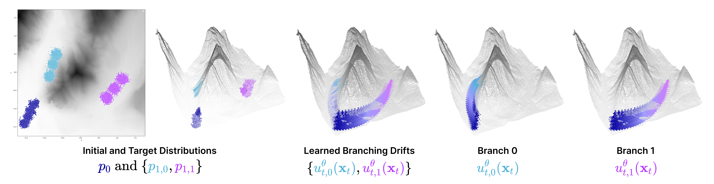

Abstract
A key challenge in trajectory matching is reconstructing multi-modal marginals, particularly when modes diverge along distinct dynamical paths. Existing Schrödinger bridge and flow matching frameworks approximate multi-modal distributions by simulating many independent particle trajectories, which are susceptible to mode collapse, with particles concentrating on dominant high-density modes or traversing only low-energy intermediate paths.
To address this challenge, we introduce Branched Schrödinger Bridge Matching (BranchSBM), a novel framework that learns a set of diverging velocity fields to reconstruct multi-modal target distributions while simultaneously learning growth networks that allocate mass across branches. Guided by a time-dependent potential energy function $V_t$, BranchSBM captures diverging, energy-minimizing dynamics without requiring intermediate-time supervision and can generate the full branched evolution from a single initial sample.
Key Contributions
- We define the Branched Generalized Schrödinger Bridge problem and introduce BranchSBM, a novel matching framework that learns optimal branched trajectories from an initial distribution to multiple target distributions.
- We derive the Branched Conditional Stochastic Optimal Control (CondSOC) problem as the sum of Unbalanced CondSOC objectives and leverage a multi-stage training algorithm to learn the optimal branching drift and growth fields that transport mass along a branched trajectory.
- We demonstrate the unique capability of BranchSBM to model dynamic branching trajectories across various real-world problems, including 3D navigation over LiDAR manifolds, modelling differentiating single-cell population dynamics, and simulating heterogeneous cellular responses to drug perturbation.
Reading Group Presentation
Overview of Framework
Branched Generalized Schrödinger Bridge Problem
We define the Branched Generalized Schrödinger Bridge (GSB) problem as minimizing the sum of Unbalanced GSB problems across all branches. All mass begins along a primary path indexed $k = 0$ with initial weight 1. Over $t \in [0,1]$, mass is transferred across $K$ secondary branches with initial weight 0 and target weight $w^*_{1,k}$ such that it minimizes the objective:
s.t. $\; dX_{t,k} = u_{t,k}(X_{t,k})dt + \sigma dB_t$, $\; X_0 \sim \pi_0$, $\; X_{1,k} \sim \pi_{1,k}$, $\; w_{0,k} = \delta_{k=0}$, $\; w_{1,k} = w^*_{1,k}$
When total mass is conserved, we enforce $\sum_{k=0}^K w_{t,k} = 1$ for all $t \in [0,1]$, which constrains the growth rates such that $g_{t,0}(X_{t,0}) + \sum_{k=1}^K g_{t,k}(X_{t,k}) = 0$. The primary branch evolves from an initial weight of 1 according to $w_{t,0} = 1 + \int_0^t g_s(X_{s,0})ds$ and the $K$ secondary branches grow from weight 0 according to $w_{t,k} = \int_0^t g_s(X_{s,k})ds$.
Branched Conditional Stochastic Optimal Control
We reformulate the Branched GSB problem as solving the Branched Conditional Stochastic Optimal Control (CondSOC) problem, where we optimize a set of parameterized drift $\{u_{t,k}\}_{k=0}^K$ and growth $\{g_{t,k}\}_{k=0}^K$ networks by minimizing the energy of the conditional trajectories between paired samples $(\boldsymbol{x}_0, \{\boldsymbol{x}_{1,k}\}_{k=0}^K) \sim \{p_{0,1,k}\}_{k=0}^K$:
This defines the objective for tractably solving the Branched GSB problem by conditioning on a discrete set of branched endpoint pairs in the dataset. When $g_{t,0} \equiv 0$ and $g_{t,k} \equiv 0$ for all $(\boldsymbol{x}, t) \in \mathbb{R}^d \times [0,1]$ and $k \in \{1, \ldots, K\}$, the Branched CondSOC problem reduces to the single path GSB problem.
Multi-Stage Training
Our framework leverages a multi-stage training algorithm that enables stable and scalable learning of branched dynamics from data snapshots.
🌳 Stage 1: Learning Energy-Minimizing Branched Neural Interpolants 🌳
Since the optimal trajectory under the state cost $V_t(X_t) : \mathbb{R}^d \times [0,1] \to \mathbb{R}$ follows a non-linear cost manifold, given a pair of endpoints $(\boldsymbol{x}_0, \boldsymbol{x}_{1,k}) \sim \pi_{0,1,k}$, we train a neural path interpolant $\varphi_{t,\eta}(\boldsymbol{x}_0, \boldsymbol{x}_{1,k}) : \mathbb{R}^d \times \mathbb{R}^d \times [0,1] \to \mathbb{R}^d$ that defines the intermediate state $\boldsymbol{x}_{t,\eta,k}$ and velocity $\dot{\boldsymbol{x}}_{t,\eta,k} = \partial_t \boldsymbol{x}_{t,\eta,k}$ at time $t$. We define $\boldsymbol{x}_{t,\eta,k}$ to be bounded at the endpoints as:
To optimize $\varphi_{t,\eta}(\boldsymbol{x}_0, \boldsymbol{x}_{1,k})$ such that it predicts the energy-minimizing trajectory, we minimize the trajectory loss:
After convergence, Stage 1 returns the network $\varphi^\star_{t,\eta}(\boldsymbol{x}_0, \boldsymbol{x}_{1,k})$ that generates the optimal conditional velocity $\dot{\boldsymbol{x}}^\star_{t,\eta,k}$, which defines the matching objective in Stage 2.
🌳 Stage 2: Learning Branched Neural Velocity Fields 🌳
We parameterize a set of neural drift fields $u^\theta_{t,k}(\boldsymbol{x}_{t,k}) : \mathbb{R}^d \times [0,1] \to \mathbb{R}^d$ that generate the mixture of bridges defined in Stage 1 by minimizing the conditional flow matching loss:
🌳 Stage 3: Learning Growth Networks 🌳
We freeze the flow networks $\{u^\theta_{t,k}\}_{k=0}^K$ and train only the growth networks $\{g^\phi_{t,k}\}_{k=0}^K$. The growth loss $\mathcal{L}_{\text{growth}}$ is a weighted combination of three components:
Branched Energy Loss. To solve the Branched CondSOC problem, we minimize $\mathcal{L}_{\text{energy}}$ where the predicted weights $w^\phi_{t,k}$ evolve according to $w^\phi_{t,0} = 1 + \int_0^t g^\phi_{s,0}(X_{s,0})ds$ for the primary branch and $w^\phi_{t,k} = \int_0^t g^\phi_{s,k}(X_{s,k})ds$ for secondary branches:
Weight Matching Loss. We minimize the difference between the predicted weights at $t=1$ and the true population fractions $w^\star_{1,k} = N_k / N_{\text{total}}$:
Mass Conservation Loss. We enforce conservation of total mass at all times $t \in [0,1]$ with $\mathcal{L}_{\text{mass}}$, which also penalizes negative weight predictions:
The combined growth loss is then:
🌳 Stage 4: Joint Training of Velocity and Growth Networks 🌳
In the final stage, we unfreeze all parameters and jointly train both the flow and growth networks $\{u^\theta_{t,k}, g^\phi_{t,k}\}_{k=0}^K$ by minimizing $\mathcal{L}_{\text{growth}}$ from Stage 3 together with a reconstruction loss $\mathcal{L}_{\text{recons}}$ that ensures the endpoint distribution at $t=1$ is maintained. The reconstruction loss penalizes generated samples $\tilde{x}_{1,k} \sim p_{1,k}$ whose $n$-nearest neighbors $x_{1,k} \in \mathcal{N}_n(\tilde{x}_{1,k})$ from the data $x_{1,k} \sim \pi_{1,k}$ are further than a margin $\epsilon$:
Experiments
LiDAR Experiment 🏔️
As a proof of concept, we evaluate BranchSBM for navigating branched paths along the surface of a three-dimensional LiDAR manifold, from an initial distribution to two distinct target distributions while remaining on low-altitude regions of the manifold.

Mouse Hematopoiesis and Pancreatic β-Cell Differentiation Modeling 🧫
BranchSBM is uniquely positioned to model single-cell population dynamics where a homogeneous cell population (e.g., progenitor cells) differentiates into several distinct subpopulation branches, each of which independently undergoes growth dynamics. We evaluate BranchSBM on a mouse hematopoiesis scRNA-seq dataset containing three developmental time points representing progenitor cells differentiating into two terminal cell fates. Compared to a single-branch SBM, BranchSBM successfully learns distinct branching trajectories and accurately reconstructs intermediate cell states, demonstrating its ability to recover lineage bifurcation dynamics.

We further evaluate on a pancreatic β-cell differentiation dataset (Veres et al., 2019) containing 51,274 cells collected across eight time points as human pluripotent stem cells differentiate into pancreatic β-like cells. Cells are projected into a 30-dimensional PCA space, and Leiden clustering is used to define 11 terminal cell populations at the final time point. BranchSBM is trained using only samples from the initial and final states, while intermediate distributions are inferred by learning trajectories constrained to the data manifold. BranchSBM not only reconstructs the multi-modal terminal distribution at the final time point with superior accuracy against all baselines, but also produces intermediate trajectories that are competitive with models trained directly on intermediate snapshots.

Simulating Cell Dynamics Under Drug Perturbation 💉
Predicting the effects of perturbation on cell state dynamics is a crucial problem for therapeutic design. We leverage BranchSBM to model the trajectories of a single cell line from a single homogeneous state to multiple heterogeneous states after a drug-induced perturbation. For the Clonidine perturbation data, BranchSBM reconstructs the ground-truth distributions, capturing the location and spread of the dataset, whereas single-branch SBM fails to differentiate cells in higher-dimensional principal components. We also show that BranchSBM can simulate trajectories in high-dimensional state spaces by scaling up to 150 PCs.

We further show that BranchSBM can scale beyond two branches by modeling the perturbed cell population of Trametinib-treated cells, which diverge into three distinct clusters. BranchSBM was trained with three endpoints and single-branch SBM with one endpoint containing all three clusters on the top 50 PCs.

BibTeX
@article{tang2026branchsbm,
title={Branched Schrödinger Bridge Matching},
author={Tang, Sophia and Zhang, Yinuo and Tong, Alexander and Chatterjee, Pranam},
journal={14th International Conference on Learning Representations (ICLR 2026)},
year={2026},
url={https://arxiv.org/abs/2506.09007}
}